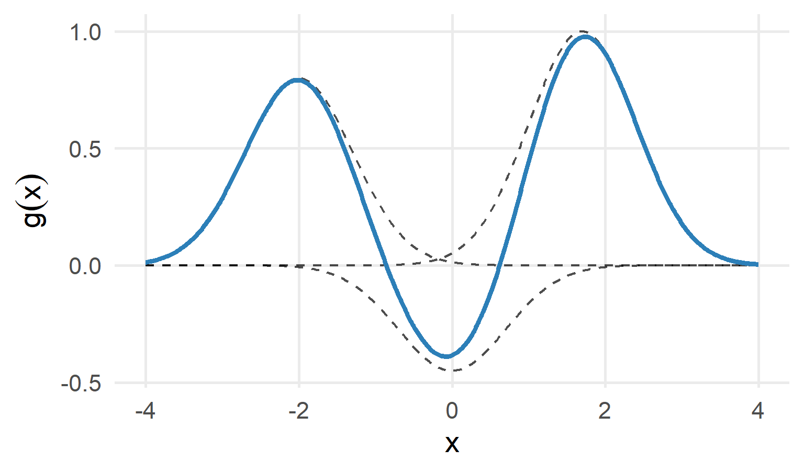

Parte I : Aprendizado Supervisionado
Kernels, RKHS, SVR e SVM
Métodos baseados em RKHS
Por que introduzir outra estrutura?
Até agora controlamos flexibilidade por:
- número de termos;
- número de nós;
- largura de banda;
- tamanho da vizinhança.
Outra possibilidade é penalizar diretamente a complexidade de uma função.
De onde vem a ideia?
Considere o problema de regressão
\[ Y=g(X)+\varepsilon \]
Na regressão linear, restringimos a função a uma forma específica:
\[ g(x)=\beta_0+\beta_1x \]
Mas e se a relação entre \(X\) e \(Y\) for não linear e não quisermos especificar antecipadamente a forma de \(g\)?
Nota
Precisamos definir em qual conjunto de funções procuraremos \(g\) e como controlar sua complexidade.
Da estimação de parâmetros à estimação de funções
Na regressão linear, procuramos um vetor de parâmetros:
\[ \boldsymbol\beta=(\beta_0,\beta_1,\ldots,\beta_p)^\top \]
Nos métodos baseados em RKHS, procuramos diretamente uma função:
\[ \boxed{g\in\mathcal H} \]
onde \(\mathcal H\) representa um espaço de funções.
\[ \text{Regressão linear: procurar }\boldsymbol\beta \qquad\Longrightarrow\qquad \text{RKHS: procurar }g \]
O que significa RKHS?
RKHS = Reproducing Kernel Hilbert Space
Em português:
Espaço de Hilbert com Núcleo Reprodutor
Para uma primeira abordagem, podemos pensar em uma RKHS como
\[ \boxed{\text{um espaço estruturado de funções candidatas para }g} \]
O que significa RKHS?
Não precisamos, neste momento, aprofundar a definição formal de espaço de Hilbert.
Importante
A ideia principal é que a RKHS fornece uma estrutura matemática para comparar, estimar e regularizar funções.
Onde entra o kernel?
Uma RKHS está associada a uma função kernel
\[ K(x,x') \]
que relaciona dois pontos \(x\) e \(x'\).
Um exemplo importante é o kernel Gaussiano (RBF):
\[ K(x,x')= \exp\left\{-\frac{(x-x')^2}{2\sigma^2}\right\} \]
Onde entra o kernel?
Intuitivamente:
\[ x\approx x' \Rightarrow K(x,x')\text{ grande} \]
\[ |x-x'|\text{ grande} \Rightarrow K(x,x')\text{ pequeno} \]
Kernel Gaussiano: uma visão gráfica

Quanto mais distante \(x\) está de \(x_0\), menor é a similaridade determinada pelo kernel.
Construindo uma função com kernels
Uma função em muitos métodos baseados em RKHS pode ser representada na forma
\[ \boxed{ g(x)=\sum_{i=1}^{n}\alpha_iK(x,x_i) } \]
ou seja,
\[ g(x)= \alpha_1K(x,x_1)+\cdots+\alpha_nK(x,x_n) \]
Construindo uma função com kernels
Cada observação de treinamento contribui para a construção da função.
Nota
Os coeficientes \(\alpha_i\) determinam quanto cada função kernel contribui para a função estimada.
Visualizando a construção

A curva final é uma combinação das funções kernel.
Mas isso não pode ficar complexo demais?
Se procurarmos apenas a função que minimiza
\[ \sum_{i=1}^{n}\left[y_i-g(x_i)\right]^2 \]
podemos obter uma função excessivamente flexível.
\[ \text{flexibilidade excessiva} \quad\Longrightarrow\quad \text{overfitting} \]
Mas isso não pode ficar complexo demais?
Precisamos equilibrar
\[ \boxed{\text{qualidade do ajuste} \quad\times\quad \text{complexidade}} \]
Essa ideia já apareceu em Ridge, Lasso e smoothing splines.
Regularização em uma RKHS
Um problema típico é
\[ \boxed{ \min_{g\in\mathcal H} \left\{ \frac{1}{n}\sum_{i=1}^{n}[y_i-g(x_i)]^2 +\lambda\|g\|_{\mathcal H}^{2} \right\} } \]
Temos dois componentes:
\[ \underbrace{ \frac{1}{n}\sum_{i=1}^{n}[y_i-g(x_i)]^2 }_{\text{erro de ajuste}} + \underbrace{ \lambda\|g\|_{\mathcal H}^{2} }_{\text{penalização da complexidade}} \]
O papel de \(\lambda\)
O parâmetro \(\lambda\) controla o compromisso entre ajuste e complexidade.
\(\lambda\) pequeno
\[ \lambda\downarrow \Rightarrow \text{penalização menor} \Rightarrow \text{maior flexibilidade} \]
Maior risco de overfitting.
\(\lambda\) grande
\[ \lambda\uparrow \Rightarrow \text{penalização maior} \Rightarrow \text{menor complexidade} \]
Maior risco de underfitting.
A conexão com Ridge
Na regressão Ridge:
\[ \min_{\boldsymbol\beta} \left\{ \frac{1}{n}\|\mathbf y-\mathbf X\boldsymbol\beta\|^2 +\lambda\|\boldsymbol\beta\|^2 \right\} \]
Na RKHS:
\[ \min_{g\in\mathcal H} \left\{ \frac{1}{n}\sum_i[y_i-g(x_i)]^2 +\lambda\|g\|_{\mathcal H}^2 \right\} \]
A conexão com Ridge
| Ridge | RKHS |
|---|---|
| estima \(\boldsymbol\beta\) | estima \(g\) |
| penaliza \(\|\boldsymbol\beta\|^2\) | penaliza \(\|g\|_{\mathcal H}^2\) |
| controla coeficientes | controla a complexidade da função |
Uma dificuldade aparente
Se \(\mathcal H\) pode conter um número enorme (até infinito) de funções, como resolver
\[ \min_{g\in\mathcal H} \{\text{erro}+\text{penalização}\}? \]
Parece que precisaríamos procurar em um espaço de dimensão infinita.
Mas um resultado fundamental simplifica o problema.
Teorema do Representante
A ideia central
Para uma ampla classe de problemas regularizados, a solução pode ser escrita como
\[ \boxed{ \hat g(x)=\sum_{i=1}^{n}\hat\alpha_iK(x,x_i) } \]
Assim, em vez de procurar diretamente uma função em \(\mathcal H\), precisamos estimar apenas
\[ \hat\alpha_1,\hat\alpha_2,\ldots,\hat\alpha_n \]
A ideia central
Portanto,
\[ \boxed{ \text{problema em espaço de funções} \longrightarrow \text{problema finito de estimação} } \]
A matriz kernel
Calculamos o kernel para cada par de observações:
\[ K_{ij}=K(x_i,x_j) \]
Isso produz a matriz kernel, ou matriz de Gram:
\[ \mathbf K= \begin{pmatrix} K(x_1,x_1)&\cdots&K(x_1,x_n)\\ \vdots&\ddots&\vdots\\ K(x_n,x_1)&\cdots&K(x_n,x_n) \end{pmatrix} \]
Nos pontos de treinamento,
\[ \hat{\mathbf g}=\mathbf K\boldsymbol\alpha \]
O kernel trick
Podemos imaginar uma transformação
\[ x\longmapsto\phi(x) \]
para um espaço de características potencialmente muito grande.
O kernel permite calcular
\[ \boxed{ K(x,x')= \langle\phi(x),\phi(x')\rangle } \]
sem precisar construir explicitamente \(\phi(x)\).
Isso é conhecido como kernel trick.
Por que isso ajuda com relações não lineares?
No espaço original, um modelo pode ser simples demais para representar os dados.
O kernel permite trabalhar implicitamente em um espaço de características mais rico:
\[ x \longrightarrow \phi(x) \longrightarrow \text{modelo flexível} \]
Com isso, podemos representar relações e fronteiras não lineares sem criar explicitamente todas as novas variáveis.
Kernel Ridge Regression
Ridge + kernel
A combinação da perda quadrática com regularização em RKHS leva ao Kernel Ridge Regression.
Com a convenção
\[ \frac{1}{n}\|\mathbf y-\mathbf K\boldsymbol\alpha\|^2 +\lambda\boldsymbol\alpha^T\mathbf K\boldsymbol\alpha, \]
a solução satisfaz
\[ \boxed{ \hat{\boldsymbol\alpha} =(\mathbf K+n\lambda\mathbf I)^{-1}\mathbf y } \]
Ridge + kernel
A predição em um novo ponto \(x\) é
\[ \boxed{ \hat g(x)=\sum_{i=1}^{n}\hat\alpha_iK(x,x_i) } \]
Comparação com regressão kernel
Não confunda regressão kernel com métodos kernel em RKHS.
Nadaraya–Watson
\[ \hat f(x)= \frac{\sum_iK_h(x-x_i)y_i} {\sum_iK_h(x-x_i)} \]
Os pesos são determinados diretamente pela proximidade.
Comparação com regressão kernel
RKHS / Kernel Ridge
\[ \hat g(x)=\sum_i\hat\alpha_iK(x,x_i) \]
Os coeficientes \(\alpha_i\) são estimados globalmente a partir dos dados, com regularização.
Dois usos da palavra “kernel”
A palavra kernel aparece nos dois contextos, mas os papéis não são idênticos.
| Suavização kernel | RKHS |
|---|---|
| pesos locais | estrutura de um espaço de funções |
| largura de banda \(h\) | parâmetros do kernel + \(\lambda\) |
| Nadaraya–Watson | Kernel Ridge, SVM etc. |
| foco em vizinhança | foco em similaridade/produto interno e regularização |
Cuidado
Há conexões matemáticas entre essas ideias, mas não devemos tratá-las como sinônimos.
E os smoothing splines?
Os smoothing splines também resolvem um problema penalizado:
\[ \min_g \left\{ \sum_{i=1}^{n}[y_i-g(x_i)]^2 +\lambda\int[g''(x)]^2dx \right\}. \]
A penalização controla a rugosidade da função.
Essa formulação também pode ser interpretada no contexto de uma RKHS.
E os smoothing splines?
Assim,
\[ \boxed{ \text{smoothing splines} \quad\text{e}\quad \text{Kernel Ridge} } \]
podem ser vistos dentro de uma estrutura mais geral de estimação regularizada de funções.
Onde RKHS aparece em Machine Learning?
A mesma estrutura aparece em diferentes métodos:
\[ \boxed{\text{Kernel Ridge Regression}} \]
\[ \boxed{\text{SVM com kernel}} \]
\[ \boxed{\text{Smoothing splines}} \]
\[ \boxed{\text{outros métodos kernel regularizados}} \]
O que muda entre eles é, entre outras coisas, a função de perda, o kernel e a forma de regularização.
Support Vector Machines e Regression
Da RKHS ao SVM e ao SVR
A estrutura de RKHS permite enxergar diferentes métodos como variações de uma mesma ideia:
\[ \boxed{\text{perda nos dados} + \text{regularização da função}} \]
Mudando a função de perda, obtemos métodos diferentes.
\[ \begin{array}{ccc} \text{Perda quadrática} & \text{Hinge loss} & \varepsilon\text{-insensível}\\ \downarrow & \downarrow & \downarrow\\ \text{Kernel Ridge} & \text{SVM} & \text{SVR} \end{array} \]
Nota
SVM é voltado principalmente à classificação; SVR adapta a mesma filosofia para regressão.
SVM: o problema de classificação
Considere inicialmente duas classes:
\[ Y\in\{-1,+1\} \]
Para uma fronteira linear,
\[ g(x)=\mathbf w^T x+b \]
classificamos de acordo com o sinal de \(g(x)\).
\[ g(x)>0 \Rightarrow +1 \qquad g(x)<0 \Rightarrow -1 \]
SVM: o problema de classificação
A questão central do SVM não é apenas encontrar uma fronteira que separe as classes.
Importante
O SVM procura uma fronteira que produza uma margem grande entre as classes.
Margem máxima
A fronteira de decisão é
\[ \mathbf w^T x+b=0 \]
As fronteiras da margem podem ser escritas como
\[ \mathbf w^T x+b=+1 \]
\[ \mathbf w^T x+b=-1 \]
A largura da margem é inversamente relacionada a \(\|\mathbf w\|\).
Margem máxima
Portanto,
\[ \boxed{\text{maximizar margem}\ \Longleftrightarrow\ \text{minimizar }\frac12\|\mathbf w\|^2} \]
Quem são os vetores de suporte?
Nem todas as observações determinam igualmente a fronteira.
Os pontos mais importantes são aqueles que estão sobre a margem ou a violam.
\[ \boxed{\text{Support vectors = observações que sustentam a solução}} \]
Pontos muito distantes da fronteira podem ter coeficiente igual a zero na representação dual e, portanto, não alteram diretamente a fronteira final.
Essa é uma das características marcantes do SVM: a solução pode depender apenas de uma parte das observações de treinamento.

E quando as classes se sobrepõem?
Em dados reais, uma separação perfeita geralmente não existe.
O SVM introduz variáveis de folga \(\xi_i\geq0\) e resolve um compromisso entre:
\[ \boxed{\text{margem grande}} \qquad\text{e}\qquad \boxed{\text{poucas violações}} \]
Uma formulação clássica é
\[ \min_{\mathbf w,b,\boldsymbol\xi} \left\{ \frac12\|\mathbf w\|^2+C\sum_{i=1}^{n}\xi_i \right\} \]
O papel de \(C\)
O hiperparâmetro \(C\) controla o custo das violações da margem.
\[ C\uparrow \Rightarrow \text{violações mais caras} \Rightarrow \text{menor tolerância a erros} \]
\[
C\downarrow
\Rightarrow
\text{maior tolerância a violações}
\Rightarrow
\text{regularização relativamente mais forte}
\]
Cuidado
Não confundir \(C\) com \(\lambda\): em parametrizações usuais, aumentar \(\lambda\) aumenta a regularização, enquanto aumentar \(C\) aumenta o custo dos erros.

Hinge loss
A perda típica do SVM é
\[ \boxed{L(y,g(x))=\max\{0,1-yg(x)\}} \]
Se
\[ yg(x)\geq1, \]
a observação está corretamente classificada e fora da margem, produzindo perda zero.
Hinge loss
Se
\[ yg(x)<1, \]
há penalização.
Assim, observações dentro da margem ou classificadas incorretamente influenciam a solução.
SVM não linear
Uma fronteira linear pode ser insuficiente.
Podemos imaginar uma transformação
\[ x\mapsto\phi(x) \]
que leva os dados para um espaço de características onde a separação seja mais simples.
Em vez de calcular explicitamente \(\phi(x)\), utilizamos
\[ \boxed{K(x,x')=\langle\phi(x),\phi(x')\rangle} \]
Esse é o kernel trick.

SVM com kernel
A função de decisão pode ser escrita como
\[ \boxed{ g(x)=\sum_{i\in SV}\alpha_i y_iK(x_i,x)+b } \]
Observe a conexão com RKHS:
\[ \text{função estimada} = \text{combinação de kernels centrados nos dados} \]
No SVM, apenas os vetores de suporte aparecem com coeficientes relevantes na representação final.
Kernel RBF/Gaussiano
Um kernel muito utilizado é
\[ K(x,x')=\exp\{-\gamma\|x-x'\|^2\} \]
O parâmetro \(\gamma\) controla o alcance da influência de cada observação.
\[ \gamma\uparrow \Rightarrow \text{influência mais localizada} \Rightarrow \text{maior potencial de flexibilidade} \]
\[ \gamma\downarrow \Rightarrow \text{influência mais ampla} \Rightarrow \text{fronteira potencialmente mais suave} \]
SVM: multi-classe
SVM é naturalmente binário. Para \(C > 2\) classes, duas estratégias principais:
One-vs-One (OVO):
- Ajusta \(\binom{C}{2}\) classificadores binários
- Cada par de classes tem seu próprio SVM
- Votação: cada classificador “vota” na classe vencedora
One-vs-Rest (OVR):
- Ajusta \(C\) classificadores binários
- Cada classe vs. todas as outras
- Classe com maior pontuação é escolhida

Do SVM para o SVR
O Support Vector Regression (SVR) transporta a mesma filosofia para uma resposta quantitativa.
No SVM:
\[ \boxed{\text{fronteira de decisão + margem}} \]
No SVR:
\[ \boxed{\text{função de regressão + tubo de tolerância}} \]
A ideia agora é encontrar uma função \(g(x)\) simples e admitir pequenos erros ao redor dela.
O tubo \(\varepsilon\)
O SVR define uma região ao redor da função estimada:
\[ g(x)-\varepsilon \leq y \leq g(x)+\varepsilon \]
Essa região possui largura total \(2\varepsilon\).
Se
\[ |y_i-g(x_i)|\leq\varepsilon, \]
o erro é considerado suficientemente pequeno e não é penalizado pela perda \(\varepsilon\)-insensível.
Perda \(\varepsilon\)-insensível
A função de perda é
\[ \boxed{ L_\varepsilon(y,g(x)) = \max\{0,|y-g(x)|-\varepsilon\} } \]
Portanto,
\[ |y-g(x)|\leq\varepsilon \Rightarrow L_\varepsilon=0 \]
mas
\[ |y-g(x)|>\varepsilon \Rightarrow L_\varepsilon>0 \]
Diferentemente dos mínimos quadrados, o SVR ignora erros suficientemente pequenos.
Quem são os vetores de suporte no SVR?
As observações dentro do tubo não precisam exercer influência direta sobre a solução.
Os pontos que estão sobre ou fora das fronteiras do tubo podem tornar-se vetores de suporte.
\[ \boxed{ \text{vetores de suporte} \Rightarrow \text{observações decisivas para }\hat g } \]
Isso produz uma representação potencialmente esparsa em termos das observações de treinamento.
SVR: regularização e violações
No caso linear,
\[ g(x)=\mathbf w^Tx+b \]
Uma formulação clássica do SVR é
\[ \min_{\mathbf w,b,\xi,\xi^*} \left\{ \frac12\|\mathbf w\|^2 +C\sum_{i=1}^{n}(\xi_i+\xi_i^*) \right\} \]
O primeiro termo controla a complexidade; o segundo penaliza observações que ultrapassam o tubo.
\(C\) e \(\varepsilon\) têm papéis diferentes
| Hiperparâmetro | Interpretação |
|---|---|
| \(\varepsilon\) | largura da região sem penalização |
| \(C\) | custo das violações do tubo |
Assim,
\[ \varepsilon\uparrow \Rightarrow \text{tubo mais largo} \Rightarrow \text{mais erros ignorados} \]
Enquanto
\[ C\uparrow \Rightarrow \text{violações mais caras} \]
SVR com kernel
Para relações não lineares, aplicamos novamente o kernel trick.
A função estimada assume a forma
\[ \boxed{ \hat g(x)= \sum_{i=1}^{n}(\alpha_i-\alpha_i^*)K(x_i,x)+b } \]
Para muitas observações,
\[ \alpha_i-\alpha_i^*=0. \]
SVR com kernel
Assim, podemos escrever conceitualmente
\[ \boxed{ \hat g(x)= \sum_{i\in SV}\gamma_iK(x_i,x)+b } \]
Voltando à combinação de kernels
Cada vetor de suporte produz uma contribuição do tipo
\[ \gamma_iK(x_i,x) \]
Se \(\gamma_i>0\), a contribuição pode elevar a função naquela região; se \(\gamma_i<0\), pode reduzi-la.
A curva final é a soma dessas contribuições:
\[ \boxed{ \hat g(x)=\sum_{i\in SV}\gamma_iK(x_i,x)+b } \]
Portanto, a interpretação gráfica discutida em RKHS reaparece diretamente no SVR.
SVM versus SVR
| Característica | SVM | SVR |
|---|---|---|
| Problema | Classificação | Regressão |
| Resposta | Categórica | Quantitativa |
| Ideia geométrica | Margem | Tubo \(\varepsilon\) |
| Perda típica | Hinge | \(\varepsilon\)-insensível |
| Regularização | \(\|\mathbf w\|^2\) | \(\|\mathbf w\|^2\) |
| Vetores de suporte | Sim | Sim |
| Kernel trick | Sim | Sim |
| \(C\) | custo das violações | custo das violações |
| \(\gamma\) no RBF | alcance do kernel | alcance do kernel |
| \(\varepsilon\) | — | largura do tubo |
Uma visão unificada
Podemos enxergar os métodos estudados como escolhas diferentes dentro da mesma estrutura geral:
\[ \boxed{ \text{ajuste aos dados} + \text{controle de complexidade} } \]
- Kernel Ridge: perda quadrática + regularização
- SVM: hinge loss + regularização
- SVR: perda \(\varepsilon\)-insensível + regularização
O kernel permite que essas funções sejam não lineares no espaço original.
EST335 — Semana 6